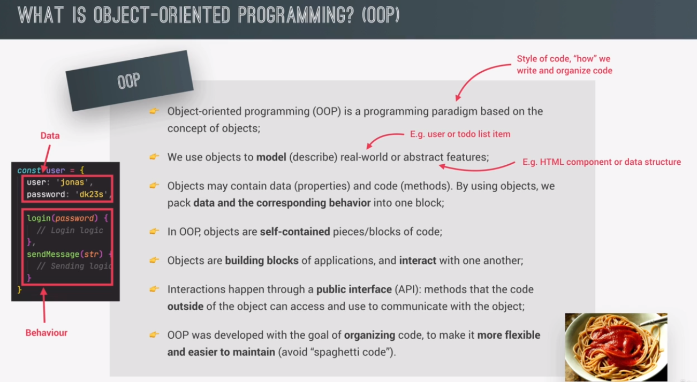
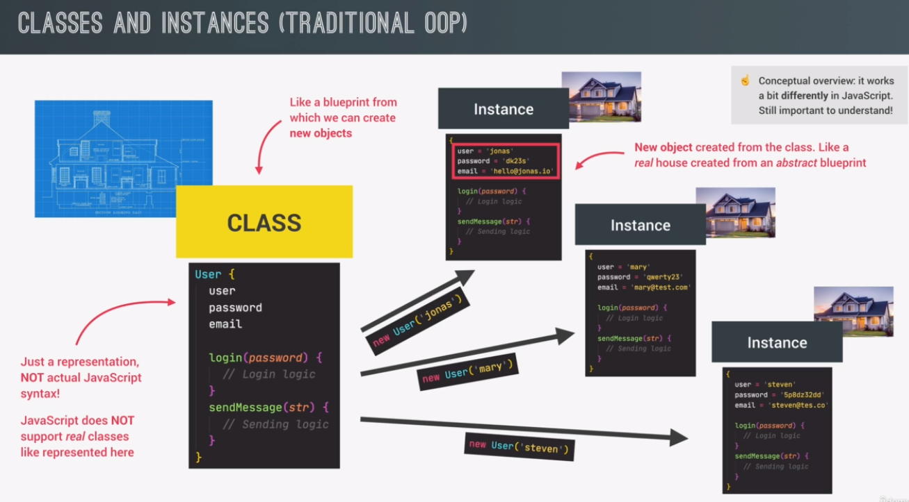
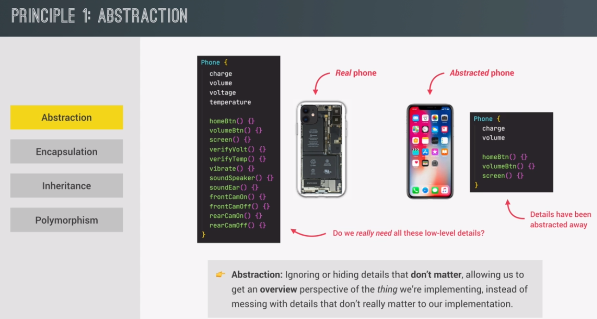
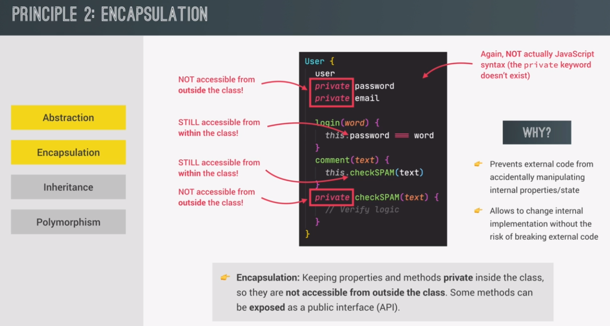
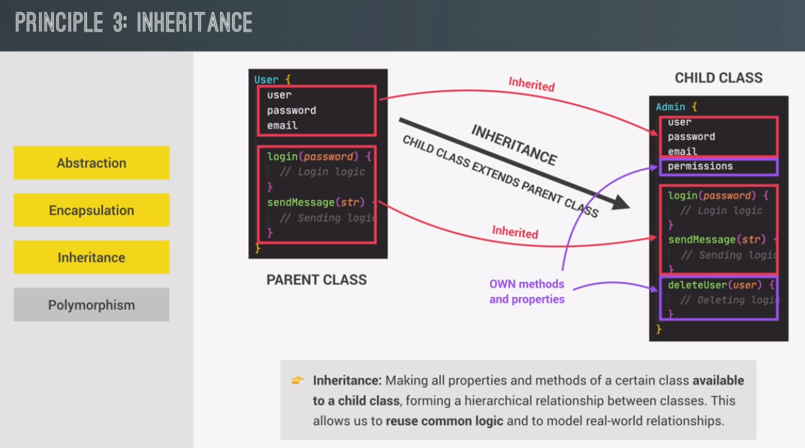
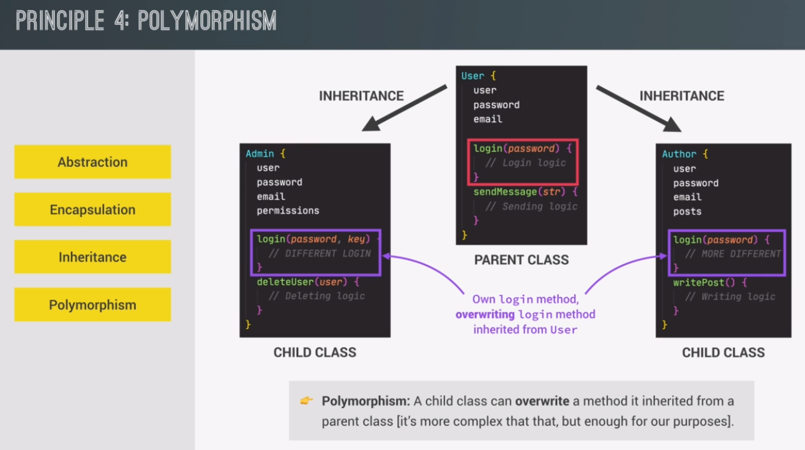

OOP in short, is a programming paradigm that is based on the concept of objects. And paradigm simply means the style of the code, so the how we write and organize code.
we use objects to model, so to describe aspects of the real world, like a user or a to-do list item, or even more abstract features like an HTML component or some kind of data structure.
objects can contain data, which we call properties, and also code, which we call methods. So we can say that by using objects, we pack all the data and the corresponding behavior all into one big block.
in OOP objects are self-contained pieces of code or blocks of code, like small applications on their own. And we then use these objects as building blocks of our applications and make objects interact with one another.
these interactions happen through a so-called public interface, which we also call API. This interface is basically a bunch of methods that a code outside of the objects can access and that we use to communicate with the object.
why does OOP actually exist? Well, this paradigm was developed with the goal of organizing code, so to make it more flexible and easier to maintain.
in OOP, we actually need a way to generate, so to create, new objects from our code. And to do that in traditional OOP, we use something called classes.
You can think of a class as a blueprint, which can then be used to create new objects based on the rules described in the class. So it's just like an architecture where the architect develops a blueprint to exactly plan and describe a house. But the blueprint is really just an abstract plan, like a set of rules, but nothing tangible that you can actually touch. However, from that blueprint, many real houses can then be built in the real world.
we call all objects created through a class instances of that class.
an instance is a real object that we can use in our code, which was created from a class, and a class itself is not an object.
4 fundamental principles of OOP.
abstraction basically means to ignore or to hide details that don't matter. This allows us to get an overview perspective of whatever it is that we're implementing instead of messing with details that don't really matter to our implementation.
Encapsulation means to keep some properties and methods private inside the class so that they're not accessible from outside the class. However, some methods can, of course, be exposed as a public interface, which we call API.
having these critical properties nicely encapsulated like this, we prevent external code from accidentally manipulating this internal state. And by the way, the term state simply refers to an object's data.
in summary, we should always have the goal to nicely encapsulate most of our state and methods and only leaving essential methods public
when we have two classes that are closely related, like user and admin here, we can have one class inherit from the other. So we will have one parent class and one child class, and the child class then extends the parent class.
a child class inherits all the properties and methods from its parent class.
Now, in more formal terms, inheritance makes all properties and methods of a certain class available to a child class, which of course then forms a hierarchy between these two classes.
And the goal of this is to reuse logic
that is common to both of the classes. In this case, both the admin and the user need to log in. And so instead of writing that logic twice, it makes sense to inherit the login method from the more global class, which is the parent class user, to the more specific class, which is the child class admin.
polymorphism means that a child class can overwrite a method that it inherited from a parent class.
In this example, how do we give them different login methods?
Well, it's actually quite simple. In each class we simply just write a new method, which is also called login. And then, according to polymorphism, that login method will overwrite the login method that has been inherited from the user class.
.............